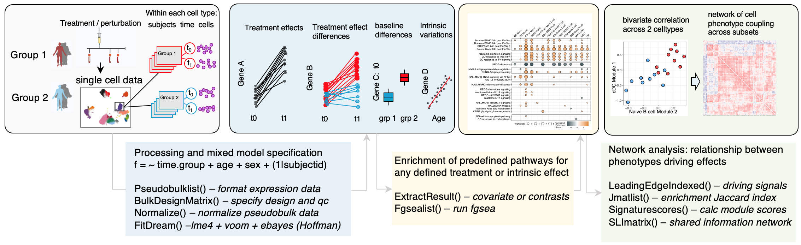

sample-level single cell generalized linear mixed models and phenotype networks in R ================

This R package supports analysis of single cell data from multi-subject experiments. The main use case is for testing within each cell type / cluster, the effects of treatment, differences in treatment effect between groups, baseline differences between groups, and intrinsic effects such as age or sex on gene expression variation. After multivariate statistical models define these interpretable effects relationships between cell types can be defined using multi cell correlation network based approaches also provided here. One can use these approaches in isolation or together to interpret the effect of perturbation on the “wiring” of the system being profiled. These networks and phenotypes derived are interpretable as they are based on robust multivariate and mixed effects models that can flexibly adapt to different experiment designs.
under active development
Examples of manuscripts using this package:
Mulè et al Immunity (2024 in press)
Mulè et al Biorxiv (2022)
An overview of methods provided below-see vignettes for more details.
1. Aggregated models with correlation network analysis of effects across cell types

Overview of the workflow starting from a single cell data object. For experiments with repeated measures from the same individuals, mixed effects models are used to account for non independence of repeated measures from the same donor. For experiments with a single measure for each subject, fixed effects models are used. The statistical effect size of covariates or contrasts from these models can be extracted for gene set enrichment using fgsea. The sample level scores for expression of the leading edge genes driving each enriched signal are then calculated and can be used for a correlation network analysis. The network correlation methods add fdr control and additional adjustments for gene sharing between leading edge genes from different signatures within the same cell types.
This workflow uses wrapper functions around well supported methods created by other groups. These should be cited as outlined below:
Cite Hoffman et al Bioinformatics 2020 is using the function FitDream(), a wrapper around the method dream. This method implements mixed effects models for transcriptome data by incorporating observational weights and empirical Bayes methods tailored to models fit with lme4.
Cite Law et al Genome Biology 2014 if using the function RunVoomLimma, a wrapper around the fixed effects model Limma + voom which introduced observational weights to allow normal-based methods for transcriptome count data.
Cite Korotkevich et al Biorxiv 2021 if using the function FgseaList(), a wrapper around fgsea, a novel Monte Carlo algorithm for enrichment with exact statistics.
2. Single cell gene or module level models
A set of functions test single cell level module activity scores to derive treatment effects, treatment effect differences between groups and baseline differences within cell types. As above a random intercept term for donor accommodates non-independence of expression for repeated timepoints from each subject. A gene level single cell Poisson model is also provided. A custom function for experiments with a single perturbation applied to donors nested in 2 groups, e.g. responders and non-responders, is also provided for this common experiment design.
3. Enrichment and visualization testing
Several functions are provided for interacting with model fits, extracting effects of interest from all cell types simultaneously, comparing cell type specific or shared effects, creating lists of gene signatures, and visualizing results.
Purpose & philosophy
Multi sample / subject experiments from human cohorts including many individuals pre and post treatment nested into different ‘response’ groups or treated with different drug perturbations are becoming more common. Common workflows for single cell analysis focus on comparing differences between cell type clusters and do not provide support for complex highly nested data. The approach outlined hereenables integrating human population variations with inference about differences due to group status or treatment effects and single cell variations. For example, assumptions about independence made by many methods methods that do not adjust for repeated measures (cells) from the same donor are violated with complex nesting. This package supports this complex structure. Consider the structure and effects shown below. Instead of ignoring or removing subject to subject variations, multivariate mixed effects models enable integration and quantification of human population variation inherent in these multi-subject experiments. The effects of age, sex, ethnicity can all be extracted and analyzed for enrichment of biological pathways. In addition, by using correlation network analysis and a shared latent information metric one can understand relationships between cell phenotypes across the entire system profiled.

Additional details
We model expression within each cluster/ cell type independently in order to capture perturbation effects of cell type specific genes as well as genes that are expressed by multiple cell types. This is necessary in order to implement linear methods which first model the mean variance trend after filtering out genes with near 0 expression across all individuals for a given cell type. Transcripts are therefore tested for perturbation effects within only in the cell types that express the genes. Enrichment and fdr testing is then done within cell type enabling the extraction of cell type specific signatures of perturbation response. The package provides simple methods for extracting such signatures.
The approach in this package is particularly well suited for multimodal single cell data where separate interpretable information (for example surface proteins with CITE-seq) are first used for cell type classification, while mRNA within these defined clusters can be analyzed for perturbation effects. A workflow we have used in many manuscripts includes denoising and normalizing ADT data using dsb, clustering cells based on only normalized protein levels, then using the workflows described in this package to integrate human population variation with transcriptome variations, inferring e.g. drug treatment effects within each protein based subset.